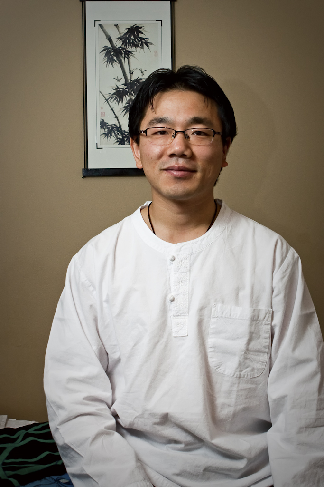

|
Rapha Acupuncture & Herbal Clinic |
Make an Appointment
|
|
| Home | ||
|
East Asian Medicine
|
 JungMin Ahn, EAMP
My Choice of an Acupuncturist Path While I was in the army, my role was a medic who assisted surgery and nursing cares in the orthopedic department. I truly enjoyed being part of a medical team. It was so rewarding to obesrve improvement in patients under my care. When I finished army duty in South Korea, I met a great Taoist Sundo Master. SunDo is an ancient energy cultivation practice such as Ki(energy) stretching & exercise, deep breathing, heavy meditation, meridian massage, and Asian herbs to help balance my energy. A great master introduced me to "Natural Healing". I witnessed so many people get dramatically better after practicing SunDo. More importantly, I noticed they smile more and have a more positive attitude towards their life. Leading them to financial success and better relationships, you name it. A master emphasized, "you must know your body and mind if you want to help others." Luckily, I have not had any diseases or taken any medication. In my life, I treasure my knowledge of knowing how to take care of my physical, emotional, and spiritual health. I experienced what an optimal balance feels like and can help others reach theirs. Then I studied with an old acupucturist who traveled all over the world to teach Asian Healing Art and did medical volunteering. During my studies I discovered my past life. It was so natural and comfortable to study and practice Asian medicine and sense the energy flow in the body. I learned Korean Acupuncture styles which are called SaAm Acupuncture, SaSang Contutitional (Four body types) Medicine, and Five Elements Balance Acupuncture. I'm convinced acupuncture is a powerful healing method to restore energy balance along with the practice of SunDo. I came to the U.S. to share what I learned. I earned a master degree in Acupuncture from Bastyr University and became a licensed Acupuncturist. Throughout my life, I have had various opportunities to experience different styles of healing modalities from diverse institutes, doctors, practitioners, and masters. I continuously pursue knowledge to learn new natural healing methods to help my patients reduce their pain. I want to help my patients understand their source and patterns of disease to stop their detrimental cycle and promote a new positive cycle of health. I would like to support your transformation into a healthy and balanced lifestyle that fits into your daily life schedule. Everyone has different energy compositions. My dedication is to support your energy balance through natural healing treatments and education so that you enjoy what you love to do without health barriers and live with your optimal health. Health and Success,
|
|||||||
|
Copyright 2016 JungMin Ahn | 32020 1st Ave S, #106, Federal Way, WA 98003 |